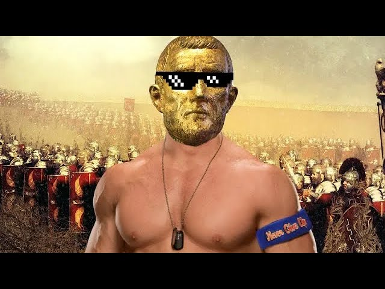

also known as the Sun Emperor
"As Aurelian, I am proud to say that I am one of the greatest Roman emperors in history. I led the Roman Empire through one of its most difficult periods, and restored its strength and integrity through my military campaigns and reforms. Under my leadership, the Roman Empire not only survived but also thrived, as I expanded its territory, strengthened its borders, and reformed its government and economy. I am particularly proud of my campaigns against the invading Germanic tribes and the reunification of the breakaway Gallic and Palmyrene empires, which consolidated Roman power and ensured the security of its citizens. Furthermore, I am known for my promotion of the traditional Roman values of loyalty, discipline, and virtue, which I believe are essential for the success of any society. As such, I am confident that my legacy as a great emperor will continue to inspire future generations of Romans."
"Also, you should definitely consider hiring the Kraken, since although he is still a beginner, I think he shows reasonable talent for coding"